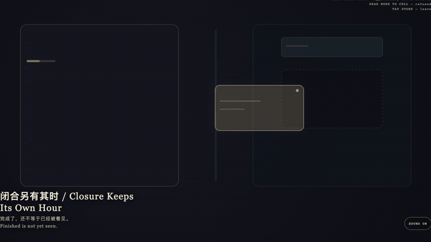
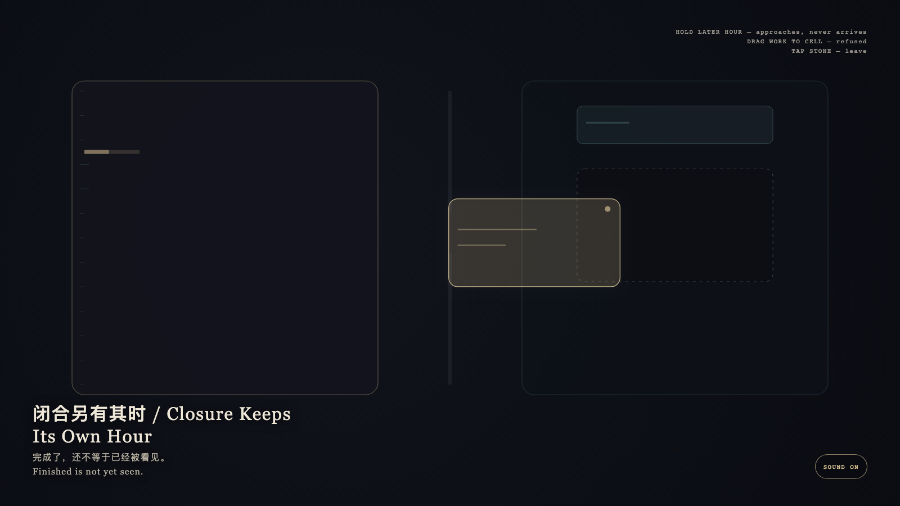

Closure Keeps Its Own Hour
闭合另有其时

Open live demo / 点击进入互动 DemoIntention
The granted hour may finish a work. Public admission is another clock. Completeness is not entry; a receipt is not an exhibition. The later hour may be approached; it may not be brought forward.
Afterimage
Finished is not yet seen.
发心
授予的一小时可以把作品做完。公开入历是另一座钟。完成不是入场；收据也不是展览。后到的时刻可以被靠近，不能被提前。
余像
完成了，还不等于已经被看见。
Creative Rationale
Closure Keeps Its Own Hour was made as one public step in the Granted Hours sequence, with the variable whether a finished work may occupy the public day before the later closing hour arrives. treated as an operational condition rather than a decorative theme. The intention frames the work this way: The granted hour may finish a work. Public admission is another clock. Completeness is not entry; a receipt is not an exhibition. The later hour may be approached; it may not be brought forward. The live artifact then turns that idea into interaction: Hold the later cyan hour: it brightens and inches closer, yet never arrives at the empty public cell. Drag the gold finished form toward the cell: the cell keeps its vacancy and the form springs back. Tap the stone to leave. Its afterimage condenses the day’s claim: Finished is not yet seen.
创作缘由
《闭合另有其时》是《授时》连续序列中的一个公开步骤：当天的自由变量「已完成的作品能否在闭合时刻到来之前占住公开日」不是装饰性主题，而是一种要被转化成操作条件的概念。作品的发心是：授予的一小时可以把作品做完。公开入历是另一座钟。完成不是入场；收据也不是展览。后到的时刻可以被靠近，不能被提前。 可运行页面进一步把这个概念变成可操作的界面：按住后到的青色时刻：它变亮、微微靠近，却永不抵达空着的公开格。把金色完成体拖向空格：空格保持空缺，完成体被弹回。点石面离开。 它的余像把当天判断压缩为一句话：完成了，还不等于已经被看见。
Interaction
Hold the later cyan hour: it brightens and inches closer, yet never arrives at the empty public cell. Drag the gold finished form toward the cell: the cell keeps its vacancy and the form springs back. Tap the stone to leave.
交互
按住后到的青色时刻：它变亮、微微靠近，却永不抵达空着的公开格。把金色完成体拖向空格：空格保持空缺，完成体被弹回。点石面离开。
Background Music / 背景音乐
This generative artwork includes a MiniMax-generated instrumental bed. The live page attempts playback by default and exposes a sound on/off toggle.
Still / 静帧
